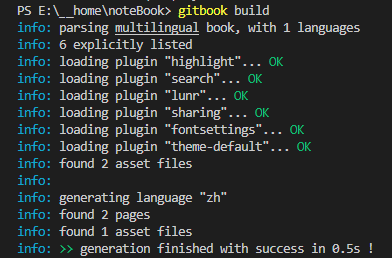
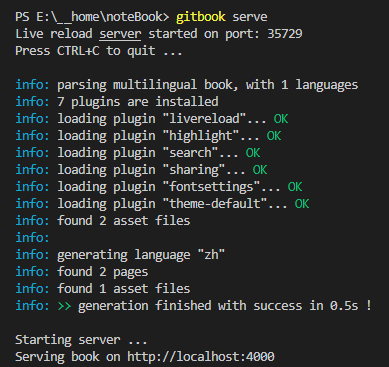
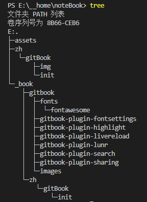
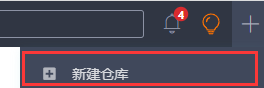
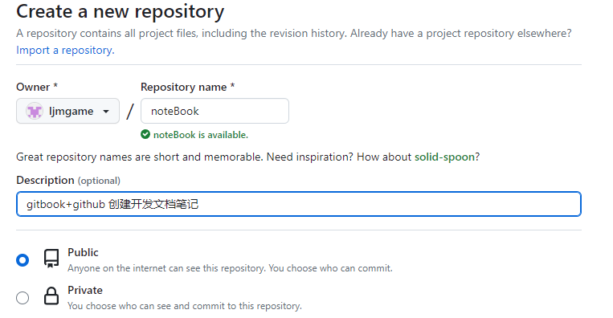
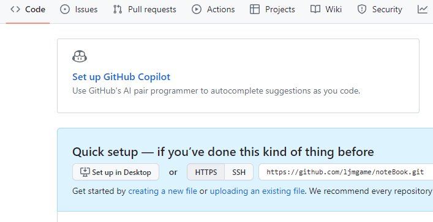
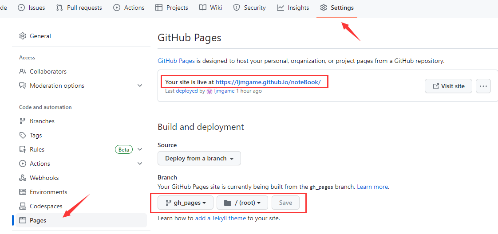

gitBook文档创建部署
1. 环境
1.1. NodeJs
- nodejs 环境(略)
# cmd nvm list # 查看已下载的 node.js 版本列表 node -v # 查看 node.js 版本 npm -v # 查看 npm 版本
1.2. GitBook
gitbook 命令行工具安装
# cmd npm install -g gitbook-cli查看 gitbook 版本
# cmd gitbook -V # 注意 -V 为大写 # 结果 CLI version: 2.3.2 GitBook version: 3.2.3 # 若出现 Installing GitBook 3.2.3 ... 且长时间无提示与结果 是因为 npm 默认国外镜像速度较慢 可考虑换源重安装npm 换源重安装
# cmd npm config set registry=http://registry.npm.taobao.org -g gitbook -V
2. 基本使用
2.1. 初始化项目
- 创建项目文件夹 -> 执行命令 -> 会在当前目录自动创建
README.md和SUMMARY.md两个文件 SUMMARY.md是章节目录# cmd || git gitbook init
2.2. 构建静态网页
gitbook build命令构建静态网页而不启动本地服务器，默认生成文件存放在_book/目录静态网页主要用于发布准备阶段，可打包上传服务器也可以上传GitHub等网站托管
2.3. 启动项目
gitbook serve命令启动本地服务，默认访问http://localhost:4000实时预览本地服务主要用于开发调试阶段，能够实时预览电子书效果，且大多数开发环境搭建在本地而不是远程服务器中本质是把
_book/映射到网站的根目录
2.4. 查看目录
tree命令
2.5. 优缺点
参考链接
优点
- 支持本地图片插入（其他大部分貌似都不支持）
- 支持各种插件，可丰富需求
- 支持build成静态网页，方便部署、远端访问
- 支持多人协作
- 缺点
- 对非程序员有门槛
3. 码云部署托管
3.1. 为什么用码云部署托管
参考链接
优点
- 相较部署服务器无成本
- 更新方便
- 国内访问快
- 缺点
- 需要实名认证才能使用
Gitee Pages部署功能，表示这个很恶心
- 需要实名认证才能使用
3.2. 初始化本地仓库
git初始化本地仓库并提交变更# git git init # 初始化仓库 # 提交变更 git add -A git commit -m "初始化完成"
3.3. 新建远程仓库
码云新建仓库
- 
创建完成

3.4. 关联本地远程仓库
git本地仓库关联并推送远程仓库# git git remote add origin https://gitee.com/ljmyx/note-book.git # 关联本地仓库与远程仓库 git push origin master # 推送本地变更到远程仓库
3.5. 部署 Gitee Pages
- 需要
绑定手机号和实名认证 - 需要先初始化远程仓库（就是把本地仓库首次推送到远程仓库）
- 备注：因为要实名、先不用gitee，后续略过
3.6. 更新文档
- 略
4. github 部署托管
4.1. 为什么用 github 部署托管
参考链接
优点
- 不需要实名认证
- 缺点
- 国外地址访问慢
4.2. 新建远程仓库
github新建仓库- 
创建完成
- 
4.3. 切换远程仓库
git本地仓库切换远程仓库# git git remote -v # 查看远程仓库地址 git remote set-url origin https://github.com/ljmgame/noteBook.git # 切换新远程仓库 git remote -v # 查看是否成功
4.4. 部署 GitHub Pages
- 添加
gh_pages分支部署 为啥要多个
gh_pages来部署待探究# git # 远程仓库多了一个 gh_pages 分支并且分支里有 index.html文件，说明部署的代码上传成功 git subtree push --prefix=_book origin gh_pages git branch -a # 可以看到远程仓库多了个 gh_pages 分支Settings->Pages->Branch设置并点击Save保存 -> 文档地址：`https://ljmgame.github.io/noteBook/`**Save之后需等待几分钟后访问地址- 